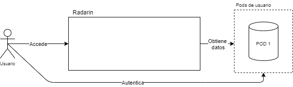
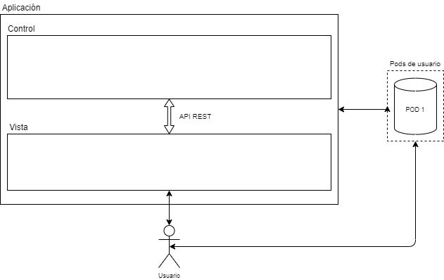
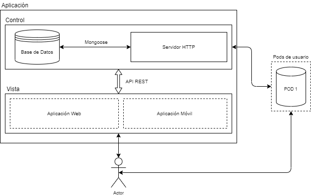

1. Introducción y Metas
Radarin es un sistema de geolocalización web/móvil descentralizado que pretende acercar a las personas a través de las nuevas tecnologías.
El sistema provee al cliente la facilidad de localizar por posicionamiento y cercanía a los amigos que tenga agregados en la aplicación (previa aceptación por parte del otro usuario). Cuando la aplicación detecte que un amigo del usuario está dentro de cierto margen, el sistema lanzará una notificación.
Con esto, facilitamos el encuentro entre gente conocida priorizando la privacidad y la seguridad del sistema.
1.1. Vista de Requerimientos
Radarin contempla unos requisitos mínimos de funcionamiento que pretenden ser la base desde la cual se pueda ofrecer al cliente la funcionalidad descrita, además de servir para futuras ampliaciones.
1.1.1. Requisitos funcionales:
-
Un usuario será capaz de ver qué otros usuarios conocidos tiene cerca.
-
Un usuario podrá añadir a otros usuarios a su lista de amigos.
-
El sistema ofrecerá al usuario notificaciones de amigos cerca.
-
Cada cliente podrá gestionar y visualizar sus localizaciones.
-
El administrador del servicio tendrá opción de gestionar usuarios y monitorizar el estado del servidor.
1.1.2. Requisitos no funcionales:
-
Soporte completo con el proyecto SOLID.
-
La aplicación estará alojada en un servidor web que únicamente almacenará localizaciones del usuario, con previa solicitud al mismo para acceder a la suya.
-
Toda información que no sea una localización será almacenada en el pod del usuario.
-
El servicio debe ser soportado por los dispositivos móviles de los usuarios, tomando los datos de geolocalización provenientes del smartphone.
-
El sistema se desplegará desde contenedores docker y utlizará el servicio en la nube heroku.
-
La aplicación móvil tendrá un sistema de monitorización.
-
Se deberá desarrollar pruebas unitarias, de aceptación y de carga para su ejecución automática en un servidor de integración continua.
1.2. Objetivos de Calidad
| Objetivos | Motivación |
|---|---|
Seguridad de datos de los usuarios |
La aplicación mantendrá seguros los datos de los usuarios, tales como la localización utlizada al usar esta. |
Facilidad de uso |
Enfoque sencillo para poder ser utilizado por todo tipo de usuarios. |
Consistente |
La aplicación debe ser consistente. |
Eficiente |
La aplicación tendrá que ser eficiente, es decir, debe funcionar de forma fluida. |
1.3. Stakeholders
| Rol/Nombre | Contacto | Expectativas |
|---|---|---|
Paulino Álvarez Ondina |
Evaluará el resultado del trabajo del equipo de desarrollo. |
Aplicación bien desarrollada según los requerimentos pedidos. |
Equipo de desarrollo |
Se encargará de desarrollar la aplicación. |
Aplicación funcional, fácil de usar, segura y siguiendo los principios SOLID. |
Usuarios |
Usarán la aplicación de forma continuada |
Poder enviar mensajes a otros usuarios cerca de su posición y que estén en su lista de amigos. |
2. Restricciones de la Arquitectura
2.1. Restricciones técnicas
| Restricción | Explicación |
|---|---|
Solid |
La aplicación debe desarrollarse siguiendo especificaciones SOLID con un control descentralizado de los datos del usuario. |
Docker |
La aplicación se deberá desplegar sobre contenedores Docker |
2.2. Restricciones organizativas
| Restricción | Explicación |
|---|---|
Límite de tiempo |
La aplicación tendrá que estar terminada para el 4 de mayo de 2021 |
Presupuesto del proyecto |
No disponemos de presupuesto, asi que los recursos son limitados. |
Testing |
La aplicación será probada durante su desarrollo para asegurar su correcto funcionamiento |
Organización del equipo |
Los equipos serán de unas 6-7 personas |
2.3. Restricciones de las convenciones
| Restricción | Explicación |
|---|---|
Control de versiones |
Debe realizarse con Git, utilizando el repositorio alojado en el servicio GitHub |
Documentacion |
Utilizando la plantilla de estructura Arc42 y usando AsciiDoctor |
Codecov |
Se utilizará para validar el alcance de los tests |
3. Alcance del sistema y Contexto
El alcance del proyecto a desarrollar abarca un sitio web/móvil en el que los usuarios podrán geolocalizar a sus amigos y viceversa. Haciendo uso de SOLID para asegurar la privacidad de cada usuario (con sus respectivos PODs).
La aplicación enviará un aviso cuando algún amigo se encuentre dentro de un determinado rango ("Tu amigo Pepito está a 1.7km de ti" ó "Tu amigo Pepito está a 10 minutos de ti")
Se podrán gestionar amigos (listar, agregar, borrar).
3.1. Contexto empresarial
El usuario puede guardar su información personal en su POD. El sistema podrá solamente acceder a su localización , pudiendo así la aplicación informar de los amigos que estén próximos.
-
Usuario: guarda a los amigos y recibe su ubicación
-
POD: registra los amigos, además de información personal del usuario
-
Servidor: recibe la localización del usuario
3.2. Contexto Tecnológico
Para este proyecto vamos a usar algunas tecnologías como son el caso de SOLID o de REACT. La idea principal de nuestro proyecto es construir una aplicación que con la ayuda de alguna API de geolocalización nos permita establecer una clase de red que nos permita almacenar con que personas estuvo en contacto la persona que posee la aplicación, para realizar esto utilizamos SOLID para almacenar su localizacion y compartirla de forma segura. Utilizaremos REACT para desarrollar tanto la aplicación web como la aplicación móvil, mientras que dejamos a SOLID la parte de la comunicación.
4. Estrategia de solución
4.1. Decisiones tecnológicas
-
Para construir esta aplicación, elegimos el lenguaje de programación JavaScript, ya que este es uno de los lenguajes más utilizados en la web y lo vemos adecuado para desarrollar aplicaciones solidas, dado que soporta módulos y es consistente con las aplicaciones web.
-
Usamos React, una biblioteca de JavaScript para crear interfaces de usuario. La utilizamos porque tenemos ejemplos de otros años que nos sirven de guía y la vemos muy preparada para realizar trabajos en web.
-
A su vez utilizaremos la librería React Native para poder hacer que nuestra aplicación se reproduzca a través de dispositivos móviles.
-
También usamos Node.js para aprovechar el modelo entrada salida sin bloqueo y controlado por eventos, para seguir siendo liviano y eficiente frente a aplicaciones de uso de datos en tiempo real que se ejecutan en dispositivos.
-
Google Maps API es la api que hemos escogido para realizar la parte de localización de la aplicación, ya que tenemos experiencia pasada con ella y la conocemos la mayoría.
-
LDFlex: lo utilizaremos para la comunicación entre usuarios mediante sus PODs.
4.2. Metas de calidad
-
Usabilidad: queremos que la aplicación sea sencilla de aprender a utilizar, hasta para alguien fuera del sector.
-
Testabilidad: se realizarán pruebas para garantizar la correcta funcionalidad de la aplicación.
-
Privacidad: La aplicación solamente almacenará la localización del usuario cuando éste lo permita, y no guardará ninguna otra información del usuario.
4.3. Organización
-
Se utilizará Jira, una herramienta en línea para la administración de tareas de un proyecto, el seguimiento de errores e incidencias y para la gestión operativa de proyectos, asi como Github para el control de versiones del proyecto, y dejar constancia de las tareas a realizar por cada miembro del grupo con los issues. A demás, realizaremos reuniones semanales, sea una o varias para ir viendo el avance de cada uno.
5. Vista de Bloques de Construcción
A continuación se muestra una descomposición estática de los diferentes componentes del sistema con la pretensión de permitir al lector comprender detalles de bajo nivel sin necesidad de acudir al código fuente o de entenderlo mejor si decide hacerlo.
La descomposición se hará por niveles de complejidad, de más simple (externo) a más complejo (interno):
5.1. Nivel 1

-
Recoge la interacción del usuario con la aplicación de manera directa para buscar amigos.
-
El usuario se autentica con los datos de su pod SOLID.
-
La aplicación, empleando los datos proporcionados por el usuario, obtiene la información necesaria del pod.
| Componente | Responsabilidad |
|---|---|
Radarin |
Aplicación con la que interacionarán los usuarios. |
POD |
Sistema de almacenamiento de información personal del protocolo SOLID, solo permite el acceso a la información almacenada en él tras la autorización explícita del usuario |
5.2. Nivel 2
 Especifica las unidades con las que interactuará el usuario final tras el despliegue de la aplicación. Incluye un diagrama general de la estructura de la aplicación.
| Unidad | Responsabilidad |
|---|---|
Control |
Responsable del manejo y almacenamiento de las credenciales del usuario (no de los datos). |
Vista |
Muestra los datos al usuario |
API REST |
Basada en HTTP, está encargada de la comunicación entre la Vista y el Control |
5.3. Nivel 3

Nivel más bajo. Detalla la estructura interna del sistema especificando sus distintos componentes.
| Componente | Responsabilidad |
|---|---|
Base de datos |
Proporciona la persistencia necesaria para almacenar y usar las credenciales de los usuarios. |
Mongoose |
Comunica la base de datos (MongoDB) con el Servidor HTTP, permite interactuar con la información almacenada en ella. |
Servidor HTTP |
Recibe las peticiones de la API REST y ejecuta los métodos adecuados en consecuencia. Permite la comunicación entre la vista y los datos. |
Aplicación Web |
Una de las variantes de la vista, basada en el framework de JS React |
Aplicación Móvil |
Destinada a dispositivos móviles, basada en el framework React Native |
6. Vistas en tiempo de ejecución
En esta sección vamos a desarrollar la mayoría de las situaciones de tiempo de ejecución en las que se puede llegar a ver envuelta nuestra aplicación. Algún ejemplo de ello puede ser como se añade y se gestionan los amigos, o como se actualiza la ubicación dentro de la aplicación gracias a la API de geolocalización.
6.1. Inicio de Sesión
-
El usuario ha de registrarse en la aplicación Radarín siguiendo unos pasos:
-
El usuario abre la aplicación y accede a la pantalla de Inicio de Sesión/Registro.
-
El usuario usa sus credenciales para iniciar sesión.
-
Se comprueba que las credenciales sean correctas.
-
El servidor acepta/rechaza la petición de autenticación.
-
6.2. Mis amigos
Nuestra aplicación permitirá que el usuario disponga de una lista de amigos dentro de la aplicación una vez se inicia sesión, de la misma manera permitiremos la opción de añadir o eliminar amigos de la lista, la cual desembocará en una actualización de la página que nos permitirá ver los cambios.
6.3. Añadir nuevos amigos
Nuestra aplicación dispondrá de una opción para añadir amigos.
6.4. Eliminar amigos
Nuestra aplicación dispondrá de una opción para eliminar amigos.
6.5. Compartir ubicación
Debemos poder permitir a la aplicación conocer nuestra ubicación.
6.6. Ver los amigos en el mapa
Vamos a poder ver a nuestros amigos en el mapa.
6.7. Notificaciones
Nuestra aplicación dispondrá de un sistema de notificaciones que nos avise de las novedades que nos incumban dentro de la aplicación.
7. Vista de Despliegue
En esta sección se muestra un esquema de la infraestructura software y hardware involucrada en el proyecto, las conexiones entre los dispositivos y el entorno de ejecución.
Con este modelo de despliegue conseguimos que nuestra aplicación sea accesible desde los dispositivos de los usuarios, tanto móviles como no. Ambos accederán a ella con un buscador web y conexión a internet (mediante protocolo HTTP). A su vez, la aplicación accderá al POD del usuario para obtener los datos requeridos.
7.1. Nivel 1 de Infraestructura
-
Radarín: Nuestra aplicación, accesible a partir de un buscador web.
-
Heroku: Servidor Web donde nuestra aplicación está siendo hosteada.
-
Cliente Web: El buscador con el que acceder a la aplicación.
-
Servidor Proveedor PODs: El servidor donde están almacenados los POD con la información particular de los usuarios.
-
Usuarios: El dispositivo de cada usuario, ya sea un ordenador de sobremesa, un portatil, tablet o smarphone, con conexión a internet.
-
POD: Es un espacio de almacenamiento de datos personales, donde la visibilidad de estos datos está controlada por su propietario.
8. Conceptos transversales
En esta sección se tratarán los conceptos transversales inherentes al proyecto, describiendo las principales normativas generales y las ideas de soluciones que son relevantes en múltiples partes del sistema.
8.1. Conceptos del dominio
Se trata de un modelo conceptual que abarca todas las cuestiones del dominio del problema desde el nivel más abstracto posible:
8.2. Patrones de arquitectura y diseño
Se estima que el patrón MVC será el utilizado para el desarrollo web de la aplicación, aunque por el momento se está discutiendo.
Por otro lado, el sistema móvil hará uso de la web y no se desarrollará una aplicación individual por el coste de tiempo que tendría.
8.3. Experiencia de usuario
La aplicación es un sistema de gestión de amigos y localizaciones, destinado a acercar a las personas. Mostrará un mapa donde se podrá observar los amigos que se encuentran cerca del usuario y permitirá añadir amigos para poder interactuar con ellos, entre otras funciones que se irán implementando como gestionar tus amistades, comunicarse con ellas, etc.
La interfaz desarrollada será amigable y accesible a cualquier persona, evitando que un cliente no pueda usar nuestra aplicación.
8.4. Seguridad y protección
Es de vital importancia que la aplicación sea segura en todo momento, almacenando correctamente los datos necesarios del usuario final.
Hará uso de pods siguiendo el proyecto SOLID donde cada usuario será el propietario del mismo, teniendo total control sobre sus datos. Los únicos datos que se tratará directamente la aplicación será la localización del cliente previa aprovación por su parte.
9. Decisiones de Diseño
-
Uso de SOLID para crear un programa basado en el almacenamiento de datos de forma descentralizada, al contrario que la mayoría de aplicaciones.
-
El programa tiene que poder ser utilizado en móviles.
-
Decisión sobre las librerías a usar.
-
Tecnologías que miembros del equipo no sabían usar.
-
Aprendizaje de nuevas tecnologías, por lo que parte del tiempo de desarrollo se basará en el aprendizaje de dichas tecnologías.
-
Uso de React como framework debido a la facilidad de uso y la cantidad de documentación disponible.
-
Uso de la API de Google Maps para ver la ubicación de los amigos por su extendido uso.
-
Usar LDflex para los listados de amigos.
10. Escenarios de calidad
| Prioridad | Calidad | Descripción |
|---|---|---|
1 |
Seguro |
Asegurar los datos personales de los usuarios, como la posición en el mapa o la lista de amigos de cada persona. |
2 |
Usable |
Fácil de usar, sin mecánicas dificiles de aprender. |
3 |
Eficiente |
Funcionamiento fluido de la aplicación, sin largas esperas al cargar la posición en el mapa o al enviar mensajes. |
4 |
Accesible |
Aplicación diseñada de forma que gente con alteraciones como el daltonismo no tenga problemas al usarla. |
5 |
Consistente |
Uso de los mismos elementos en todas las distintas interfaces de la aplicación, haciendo que no parezcan diferentes aplicaciones en cada pantalla. |
6 |
Modulable |
Aplicación bien dividida en diferentes partes (Parte de interfaz, de lógica, de base de datos…) para hacer que la aplicación sea más mantenible. |
10.1. Árbol de calidad
11. Riesgos y Deudas Técnicas
11.1. Riesgos
| Prioridad | Riesgos | Consecuencias | Posibles soluciones |
|---|---|---|---|
1 |
Uso de nuevas tecnologías |
Mal uso de las nuevas tecnologías al no tener ninguna experiencia previa. |
Búsqueda y estudio de las nuevas tecnologías antes de empezar el desarrollo. |
2 |
Uso de principios SOLID |
Es una tecnología poco madura por lo que es dificil de usar correctamente. |
Leer la documentación de SOLID y ayudarse de otros trabajos que usen esta tecnología. |
3 |
Organización del equipo |
Mala organización debido a una pobre comunicación y desconocimiento del resto de miembros del equipo, o al no saber en que puede ser mejor un miembro u otro del equipo a la hora de desarrollar. |
Reuniones del equipo para planificar el desarrollo, ir actualizando los progresos y debatir sobre posibles cambios. |
4 |
Manejo del tiempo empleado |
Pérdidas de tiempo centrándonos en aspectos en los que no había que profundizar tanto. |
Detectar bien las principales claves del desarrollo para perder el menor tiempo posible en cosas secundarias. |
11.2. Deudas Técnicas
Cosas mejorables en la aplicación:
-
Penalización de rendimiento al acceder a los POD
-
Aplicación no adaptable al usar la API de Google Maps
12. Glossary
| Término | Definición |
|---|---|
React |
Es una biblioteca Javascript de código abierto diseñada para crear interfaces de usuario con el objetivo de facilitar el desarrollo de aplicaciones en una sola página. |
Solid |
Un conjunto de funciones y procedimientos que permiten la creación de aplicaciones que acceden a las características o datos de un sistema operativo, aplicación u otro servicio. |
Heroku |
Heroku es una plataforma como servicio que permite a los desarrolladores crear, ejecutar y operar aplicaciones completamente en la nube. |
Pod |
Los Pods de solid son donde tú almacenas tu información. Cualquier tipo de información puede ser guardada en un Pod de Solid. Una vez guardada tu controlas quien accede a tus datos. |
Aplicación |
|
Sistema |
About arc42
arc42, the Template for documentation of software and system architecture.
By Dr. Gernot Starke, Dr. Peter Hruschka and contributors.
Template Revision: 7.0 EN (based on asciidoc), January 2017
© We acknowledge that this document uses material from the arc 42 architecture template, http://www.arc42.de. Created by Dr. Peter Hruschka & Dr. Gernot Starke.